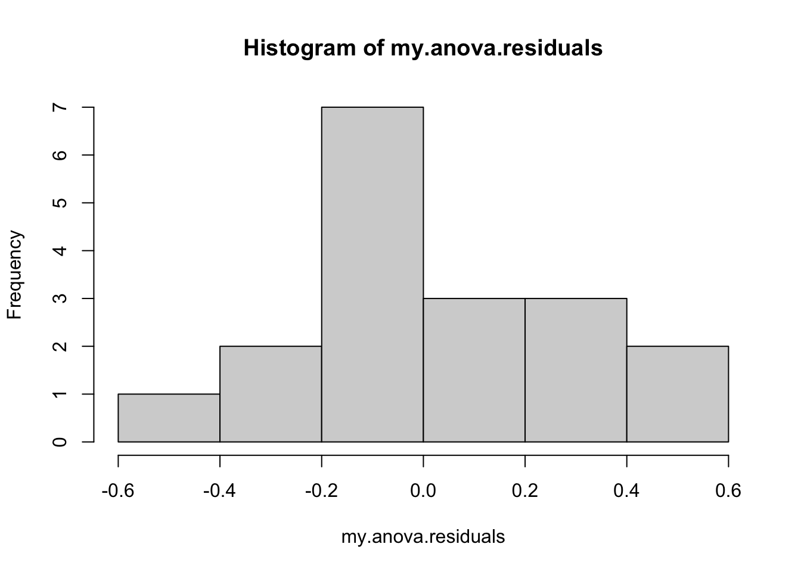
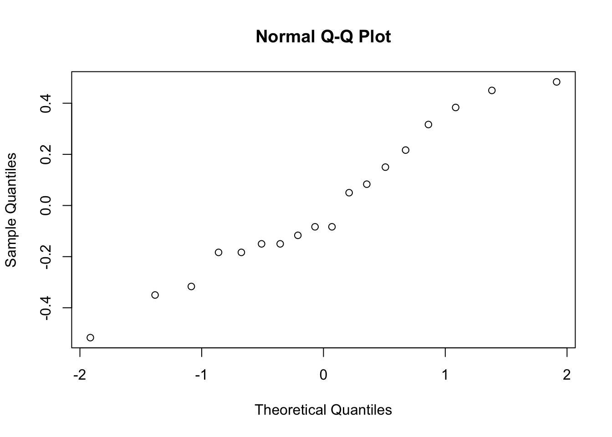

Chapter 11 Multiple comparisons
11.1 Multiple comparisons and post hoc tests
Any time you run an ANOVA with more than two groups, and you end up with a significant effect, the first thing you’ll probably want to ask is which groups are actually different from one another. In our drugs example, our null hypothesis was that all three drugs (placebo, Anxifree and Joyzepam) have the exact same effect on mood. But if you think about it, the null hypothesis is actually claiming three different things all at once here. Specifically, it claims that:
- Your competitor’s drug (Anxifree) is no better than a placebo (i.e., \(\mu_A = \mu_P\))
- Your drug (Joyzepam) is no better than a placebo (i.e., \(\mu_J = \mu_P\))
- Anxifree and Joyzepam are equally effective (i.e., \(\mu_J = \mu_A\))
If any one of those three claims is false, then the null hypothesis is also false. So, now that we’ve rejected our null hypothesis, we’re thinking that at least one of those things isn’t true. But which ones? All three of these propositions are of interest: you certainly want to know if your new drug Joyzepam is better than a placebo, and it would be nice to know how well it stacks up against an existing commercial alternative (i.e., Anxifree). It would even be useful to check the performance of Anxifree against the placebo: even if Anxifree has already been extensively tested against placebos by other researchers, it can still be very useful to check that your study is producing similar results to earlier work.
When we characterise the null hypothesis in terms of these three distinct propositions, it becomes clear that there are eight possible “states of the world” that we need to distinguish between:
| possibility: | is \(\mu_P = \mu_A\)? | is \(\mu_P = \mu_J\)? | is \(\mu_A = \mu_J\)? | which hypothesis? |
|---|---|---|---|---|
| 1 | \(\checkmark\) | \(\checkmark\) | \(\checkmark\) | null |
| 2 | \(\checkmark\) | \(\checkmark\) | alternative | |
| 3 | \(\checkmark\) | \(\checkmark\) | alternative | |
| 4 | \(\checkmark\) | alternative | ||
| 5 | \(\checkmark\) | \(\checkmark\) | alternative | |
| 6 | \(\checkmark\) | alternative | ||
| 7 | \(\checkmark\) | alternative | ||
| 8 | alternative |
By rejecting the null hypothesis, we’ve decided that we don’t believe that #1 is the true state of the world. The next question to ask is, which of the other seven possibilities do we think is right? When faced with this situation, its usually helps to look at the data. For instance, if we look at the plots in Figure 10.1, it’s tempting to conclude that Joyzepam is better than the placebo and better than Anxifree, but there’s no real difference between Anxifree and the placebo. However, if we want to get a clearer answer about this, it might help to run some tests.
11.1.1 Running “pairwise” \(t\)-tests
How might we go about solving our problem? Given that we’ve got three separate pairs of means (placebo versus Anxifree, placebo versus Joyzepam, and Anxifree versus Joyzepam) to compare, what we could do is run three separate \(t\)-tests and see what happens. There’s a couple of ways that we could do this. One method would be to construct new variables corresponding the groups you want to compare (e.g., anxifree, placebo and joyzepam), and then run a \(t\)-test on these new variables:
t.test( anxifree, placebo, var.equal = TRUE ) # Student t-test
anxifree <- with(clin.trial, mood.gain[drug == "anxifree"]) # mood change due to anxifree
placebo <- with(clin.trial, mood.gain[drug == "placebo"]) # mood change due to placebo or, you could use the subset argument in the t.test() function to select only those observations corresponding to one of the two groups we’re interested in:
t.test( formula = mood.gain ~ drug,
data = clin.trial,
subset = drug %in% c("placebo","anxifree"),
var.equal = TRUE
)See Chapter ?? if you’ve forgotten how the %in% operator works. Regardless of which version we do, R will print out the results of the \(t\)-test, though I haven’t included that output here. If we go on to do this for all possible pairs of variables, we can look to see which (if any) pairs of groups are significantly different to each other. This “lots of \(t\)-tests idea” isn’t a bad strategy, though as we’ll see later on there are some problems with it. However, for the moment our bigger problem is that it’s a pain to have to type in such a long command over and over again: for instance, if your experiment has 10 groups, then you have to run 45 \(t\)-tests. That’s way too much typing.
To help keep the typing to a minimum, R provides a function called pairwise.t.test() that automatically runs all of the \(t\)-tests for you. There are three arguments that you need to specify, the outcome variable x, the group variable g, and the p.adjust.method argument, which “adjusts” the \(p\)-value in one way or another. I’ll explain \(p\)-value adjustment in a moment, but for now we can just set p.adjust.method = "none" since we’re not doing any adjustments. For our example, here’s what we do:
pairwise.t.test( x = clin.trial$mood.gain, # outcome variable
g = clin.trial$drug, # grouping variable
p.adjust.method = "none" # which correction to use?
)##
## Pairwise comparisons using t tests with pooled SD
##
## data: clin.trial$mood.gain and clin.trial$drug
##
## placebo anxifree
## anxifree 0.15021 -
## joyzepam 3e-05 0.00056
##
## P value adjustment method: noneOne thing that bugs me slightly about the pairwise.t.test() function is that you can’t just give it an aov object, and have it produce this output. After all, I went to all that trouble earlier of getting R to create the my.anova variable and – as we saw in Section 10.4.2 – R has actually stored enough information inside it that I should just be able to get it to run all the pairwise tests using my.anova as an input. To that end, I’ve included a posthocPairwiseT() function in the lsr package that lets you do this. The idea behind this function is that you can just input the aov object itself,156 and then get the pairwise tests as an output. As of the current writing, posthocPairwiseT() is actually just a simple way of calling pairwise.t.test() function, but you should be aware that I intend to make some changes to it later on. Here’s an example:
posthocPairwiseT( x = my.anova, p.adjust.method = "none" )##
## Pairwise comparisons using t tests with pooled SD
##
## data: mood.gain and drug
##
## placebo anxifree
## anxifree 0.15021 -
## joyzepam 3e-05 0.00056
##
## P value adjustment method: noneIn later versions, I plan to add more functionality (e.g., adjusted confidence intervals), but for now I think it’s at least kind of useful. To see why, let’s suppose you’ve run your ANOVA and stored the results in my.anova, and you’re happy using the Holm correction (the default method in pairwise.t.test(), which I’ll explain this in a moment). In that case, all you have to do is type this:
posthocPairwiseT( my.anova )and R will output the test results. Much more convenient, I think.
11.1.2 Corrections for multiple testing
In the previous section I hinted that there’s a problem with just running lots and lots of \(t\)-tests. The concern is that when running these analyses, what we’re doing is going on a “fishing expedition”: we’re running lots and lots of tests without much theoretical guidance, in the hope that some of them come up significant. This kind of theory-free search for group differences is referred to as post hoc analysis (“post hoc” being Latin for “after this”).157
It’s okay to run post hoc analyses, but a lot of care is required. For instance, the analysis that I ran in the previous section is actually pretty dangerous: each individual \(t\)-test is designed to have a 5% Type I error rate (i.e., \(\alpha = .05\)), and I ran three of these tests. Imagine what would have happened if my ANOVA involved 10 different groups, and I had decided to run 45 “post hoc” \(t\)-tests to try to find out which ones were significantly different from each other, you’d expect 2 or 3 of them to come up significant by chance alone. As we saw in Chapter 5, the central organising principle behind null hypothesis testing is that we seek to control our Type I error rate, but now that I’m running lots of \(t\)-tests at once, in order to determine the source of my ANOVA results, my actual Type I error rate across this whole family of tests has gotten completely out of control.
The usual solution to this problem is to introduce an adjustment to the \(p\)-value, which aims to control the total error rate across the family of tests (see Shaffer 1995). An adjustment of this form, which is usually (but not always) applied because one is doing post hoc analysis, is often referred to as a correction for multiple comparisons, though it is sometimes referred to as “simultaneous inference.” In any case, there are quite a few different ways of doing this adjustment. I’ll discuss a few of them in this section and in Section ??, but you should be aware that there are many other methods out there (see, e.g., Hsu 1996).
11.1.3 Bonferroni corrections
The simplest of these adjustments is called the Bonferroni correction (Dunn 1961), and it’s very very simple indeed. Suppose that my post hoc analysis consists of \(m\) separate tests, and I want to ensure that the total probability of making any Type I errors at all is at most \(\alpha\).158 If so, then the Bonferroni correction just says “multiply all your raw \(p\)-values by \(m\).” If we let \(p\) denote the original \(p\)-value, and let \(p^\prime_j\) be the corrected value, then the Bonferroni correction tells that: \[ p^\prime = m \times p \] And therefore, if you’re using the Bonferroni correction, you would reject the null hypothesis if \(p^\prime < \alpha\). The logic behind this correction is very straightforward. We’re doing \(m\) different tests; so if we arrange it so that each test has a Type I error rate of at most \(\alpha / m\), then the total Type I error rate across these tests cannot be larger than \(\alpha\). That’s pretty simple, so much so that in the original paper, the author writes:
The method given here is so simple and so general that I am sure it must have been used before this. I do not find it, however, so can only conclude that perhaps its very simplicity has kept statisticians from realizing that it is a very good method in some situations (pp 52-53 Dunn 1961)
To use the Bonferroni correction in R, you can use the pairwise.t.test() function,159 making sure that you set p.adjust.method = "bonferroni". Alternatively, since the whole reason why we’re doing these pairwise tests in the first place is because we have an ANOVA that we’re trying to understand, it’s probably more convenient to use the posthocPairwiseT() function in the lsr package, since we can use my.anova as the input:
posthocPairwiseT( my.anova, p.adjust.method = "bonferroni")##
## Pairwise comparisons using t tests with pooled SD
##
## data: mood.gain and drug
##
## placebo anxifree
## anxifree 0.4506 -
## joyzepam 9.1e-05 0.0017
##
## P value adjustment method: bonferroniIf we compare these three \(p\)-values to those that we saw in the previous section when we made no adjustment at all, it is clear that the only thing that R has done is multiply them by 3.
11.1.4 Holm corrections
Although the Bonferroni correction is the simplest adjustment out there, it’s not usually the best one to use. One method that is often used instead is the Holm correction (Holm 1979). The idea behind the Holm correction is to pretend that you’re doing the tests sequentially; starting with the smallest (raw) \(p\)-value and moving onto the largest one. For the \(j\)-th largest of the \(p\)-values, the adjustment is either \[ p^\prime_j = j \times p_j \] (i.e., the biggest \(p\)-value remains unchanged, the second biggest \(p\)-value is doubled, the third biggest \(p\)-value is tripled, and so on), or \[ p^\prime_j = p^\prime_{j+1} \] whichever one is larger. This might sound a little confusing, so let’s go through it a little more slowly. Here’s what the Holm correction does. First, you sort all of your \(p\)-values in order, from smallest to largest. For the smallest \(p\)-value all you do is multiply it by \(m\), and you’re done. However, for all the other ones it’s a two-stage process. For instance, when you move to the second smallest \(p\) value, you first multiply it by \(m-1\). If this produces a number that is bigger than the adjusted \(p\)-value that you got last time, then you keep it. But if it’s smaller than the last one, then you copy the last \(p\)-value. To illustrate how this works, consider the table below, which shows the calculations of a Holm correction for a collection of five \(p\)-values:
| raw \(p\) | rank \(j\) | \(p \times j\) | Holm \(p\) |
|---|---|---|---|
| .001 | 5 | .005 | .005 |
| .005 | 4 | .020 | .020 |
| .019 | 3 | .057 | .057 |
| .022 | 2 | .044 | .057 |
| .103 | 1 | .103 | .103 |
Hopefully that makes things clear.
Although it’s a little harder to calculate, the Holm correction has some very nice properties: it’s more powerful than Bonferroni (i.e., it has a lower Type II error rate), but – counterintuitive as it might seem – it has the same Type I error rate. As a consequence, in practice there’s never any reason to use the simpler Bonferroni correction, since it is always outperformed by the slightly more elaborate Holm correction. Because of this, the Holm correction is the default one used by pairwise.t.test() and posthocPairwiseT(). To run the Holm correction in R, you could specify p.adjust.method = "Holm" if you wanted to, but since it’s the default you can just to do this:
posthocPairwiseT( my.anova )##
## Pairwise comparisons using t tests with pooled SD
##
## data: mood.gain and drug
##
## placebo anxifree
## anxifree 0.1502 -
## joyzepam 9.1e-05 0.0011
##
## P value adjustment method: holmAs you can see, the biggest \(p\)-value (corresponding to the comparison between Anxifree and the placebo) is unaltered: at a value of \(.15\), it is exactly the same as the value we got originally when we applied no correction at all. In contrast, the smallest \(p\)-value (Joyzepam versus placebo) has been multiplied by three.
11.1.5 Writing up the post hoc test
Finally, having run the post hoc analysis to determine which groups are significantly different to one another, you might write up the result like this:
Post hoc tests (using the Holm correction to adjust \(p\)) indicated that Joyzepam produced a significantly larger mood change than both Anxifree (\(p = .001\)) and the placebo (\(p = 9.1 \times 10^{-5}\)). We found no evidence that Anxifree performed better than the placebo (\(p = .15\)).
Or, if you don’t like the idea of reporting exact \(p\)-values, then you’d change those numbers to \(p<.01\), \(p<.001\) and \(p > .05\) respectively. Either way, the key thing is that you indicate that you used Holm’s correction to adjust the \(p\)-values. And of course, I’m assuming that elsewhere in the write up you’ve included the relevant descriptive statistics (i.e., the group means and standard deviations), since these \(p\)-values on their own aren’t terribly informative.
11.2 Assumptions of one-way ANOVA
Like any statistical test, analysis of variance relies on some assumptions about the data. There are three key assumptions that you need to be aware of: normality, homogeneity of variance and independence. If you remember back to Section 10.3.4 – which I hope you at least skimmed even if you didn’t read the whole thing – I described the statistical models underpinning ANOVA, which I wrote down like this: \[ \begin{array}{lrcl} H_0: & Y_{ik} &=& \mu + \epsilon_{ik} \\ H_1: & Y_{ik} &=& \mu_k + \epsilon_{ik} \end{array} \] In these equations \(\mu\) refers to a single, grand population mean which is the same for all groups, and \(\mu_k\) is the population mean for the \(k\)-th group. Up to this point we’ve been mostly interested in whether our data are best described in terms of a single grand mean (the null hypothesis) or in terms of different group-specific means (the alternative hypothesis). This makes sense, of course: that’s actually the important research question! However, all of our testing procedures have – implicitly – relied on a specific assumption about the residuals, \(\epsilon_{ik}\), namely that \[ \epsilon_{ik} \sim \mbox{Normal}(0, \sigma^2) \] None of the maths works properly without this bit. Or, to be precise, you can still do all the calculations, and you’ll end up with an \(F\)-statistic, but you have no guarantee that this \(F\)-statistic actually measures what you think it’s measuring, and so any conclusions that you might draw on the basis of the \(F\) test might be wrong.
So, how do we check whether this assumption about the residuals is accurate? Well, as I indicated above, there are three distinct claims buried in this one statement, and we’ll consider them separately.
- Normality. The residuals are assumed to be normally distributed. As we saw in Section 9.11, we can assess this by looking at QQ plots or running a Shapiro-Wilk test. I’ll talk about this in an ANOVA context in Section 11.5.
- Homogeneity of variance. Notice that we’ve only got the one value for the population standard deviation (i.e., \(\sigma\)), rather than allowing each group to have it’s own value (i.e., \(\sigma_k\)). This is referred to as the homogeneity of variance (sometimes called homoscedasticity) assumption. ANOVA assumes that the population standard deviation is the same for all groups. We’ll talk about this extensively in Section 11.3.
- Independence. The independence assumption is a little trickier. What it basically means is that, knowing one residual tells you nothing about any other residual. All of the \(\epsilon_{ik}\) values are assumed to have been generated without any “regard for” or “relationship to” any of the other ones. There’s not an obvious or simple way to test for this, but there are some situations that are clear violations of this: for instance, if you have a repeated-measures design, where each participant in your study appears in more than one condition, then independence doesn’t hold; there’s a special relationship between some observations… namely those that correspond to the same person! When that happens, you need to use something like repeated measures ANOVA. I don’t currently talk about repeated measures ANOVA in this book, but it will be included in later versions.
11.2.1 How robust is ANOVA?
One question that people often want to know the answer to is the extent to which you can trust the results of an ANOVA if the assumptions are violated. Or, to use the technical language, how robust is ANOVA to violations of the assumptions. Due to deadline constraints I don’t have the time to discuss this topic. This is a topic I’ll cover in some detail in a later version of the book.
11.3 Checking the homogeneity of variance assumption
There’s more than one way to skin a cat, as the saying goes, and more than one way to test the homogeneity of variance assumption, too (though for some reason no-one made a saying out of that). The most commonly used test for this that I’ve seen in the literature is the Levene test (Levene 1960), and the closely related Brown-Forsythe test (Brown and Forsythe 1974), both of which I’ll describe here. Alternatively, you could use the Bartlett test, which is implemented in R via the bartlett.test() function, but I’ll leave it as an exercise for the reader to go check that one out if you’re interested.
Levene’s test is shockingly simple. Suppose we have our outcome variable \(Y_{ik}\). All we do is define a new variable, which I’ll call \(Z_{ik}\), corresponding to the absolute deviation from the group mean: \[ Z_{ik} = \left| Y_{ik} - \bar{Y}_k \right| \] Okay, what good does this do us? Well, let’s take a moment to think about what \(Z_{ik}\) actually is, and what we’re trying to test. The value of \(Z_{ik}\) is a measure of how the \(i\)-th observation in the \(k\)-th group deviates from its group mean. And our null hypothesis is that all groups have the same variance; that is, the same overall deviations from the group means! So, the null hypothesis in a Levene’s test is that the population means of \(Z\) are identical for all groups. Hm. So what we need now is a statistical test of the null hypothesis that all group means are identical. Where have we seen that before? Oh right, that’s what ANOVA is… and so all that the Levene’s test does is run an ANOVA on the new variable \(Z_{ik}\).
What about the Brown-Forsythe test? Does that do anything particularly different? Nope. The only change from the Levene’s test is that it constructs the transformed variable \(Z\) in a slightly different way, using deviations from the group medians rather than deviations from the group means. That is, for the Brown-Forsythe test, \[ Z_{ik} = \left| Y_{ik} - \mbox{median}_k(Y) \right| \] where \(\mbox{median}_k(Y)\) is the median for group \(k\). Regardless of whether you’re doing the standard Levene test or the Brown-Forsythe test, the test statistic – which is sometimes denoted \(F\), but sometimes written as \(W\) – is calculated in exactly the same way that the \(F\)-statistic for the regular ANOVA is calculated, just using a \(Z_{ik}\) rather than \(Y_{ik}\). With that in mind, let’s just move on and look at how to run the test in R.
11.3.1 Running the Levene’s test in R
Okay, so how do we run the Levene test? Obviously, since the Levene test is just an ANOVA, it would be easy enough to manually create the transformed variable \(Z_{ik}\) and then use the aov() function to run an ANOVA on that. However, that’s the tedious way to do it. A better way to do run your Levene’s test is to use the leveneTest() function, which is in the car package. As usual, we first load the package
library( car ) and now that we have, we can run our Levene test. The main argument that you need to specify is y, but you can do this in lots of different ways. Probably the simplest way to do it is actually input the original aov object. Since I’ve got the my.anova variable stored from my original ANOVA, I can just do this:
leveneTest( my.anova )## Levene's Test for Homogeneity of Variance (center = median)
## Df F value Pr(>F)
## group 2 1.4672 0.2618
## 15If we look at the output, we see that the test is non-significant \((F_{2,15} = 1.47, p = .26)\), so it looks like the homogeneity of variance assumption is fine. Remember, although R reports the test statistic as an \(F\)-value, it could equally be called \(W\), in which case you’d just write \(W_{2,15} = 1.47\). Also, note the part of the output that says center = median. That’s telling you that, by default, the leveneTest() function actually does the Brown-Forsythe test. If you want to use the mean instead, then you need to explicitly set the center argument, like this:
leveneTest( y = my.anova, center = mean )## Levene's Test for Homogeneity of Variance (center = mean)
## Df F value Pr(>F)
## group 2 1.4497 0.2657
## 15That being said, in most cases it’s probably best to stick to the default value, since the Brown-Forsythe test is a bit more robust than the original Levene test.
11.3.2 Additional comments
Two more quick comments before I move onto a different topic. Firstly, as mentioned above, there are other ways of calling the leveneTest() function. Although the vast majority of situations that call for a Levene test involve checking the assumptions of an ANOVA (in which case you probably have a variable like my.anova lying around), sometimes you might find yourself wanting to specify the variables directly. Two different ways that you can do this are shown below:
leveneTest(y = mood.gain ~ drug, data = clin.trial) # y is a formula in this case
leveneTest(y = clin.trial$mood.gain, group = clin.trial$drug) # y is the outcome Secondly, I did mention that it’s possible to run a Levene test just using the aov() function. I don’t want to waste a lot of space on this, but just in case some readers are interested in seeing how this is done, here’s the code that creates the new variables and runs an ANOVA. If you are interested, feel free to run this to verify that it produces the same answers as the Levene test (i.e., with center = mean):
Y <- clin.trial $ mood.gain # the original outcome variable, Y
G <- clin.trial $ drug # the grouping variable, G
gp.mean <- tapply(Y, G, mean) # calculate group means
Ybar <- gp.mean[G] # group mean associated with each obs
Z <- abs(Y - Ybar) # the transformed variable, Z
summary( aov(Z ~ G) ) # run the ANOVA ## Df Sum Sq Mean Sq F value Pr(>F)
## G 2 0.0616 0.03080 1.45 0.266
## Residuals 15 0.3187 0.02125That said, I don’t imagine that many people will care about this. Nevertheless, it’s nice to know that you could do it this way if you wanted to. And for those of you who do try it, I think it helps to demystify the test a little bit when you can see – with your own eyes – the way in which Levene’s test relates to ANOVA.
11.4 Removing the homogeneity of variance assumption
In our example, the homogeneity of variance assumption turned out to be a pretty safe one: the Levene test came back non-significant, so we probably don’t need to worry. However, in real life we aren’t always that lucky. How do we save our ANOVA when the homogeneity of variance assumption is violated? If you recall from our discussion of \(t\)-tests, we’ve seen this problem before. The Student \(t\)-test assumes equal variances, so the solution was to use the Welch \(t\)-test, which does not. In fact, Welch (1951) also showed how we can solve this problem for ANOVA too (the Welch one-way test). It’s implemented in R using the oneway.test() function. The arguments that we’ll need for our example are:
formula. This is the model formula, which (as usual) needs to specify the outcome variable on the left hand side and the grouping variable on the right hand side: i.e., something likeoutcome ~ group.data. Specifies the data frame containing the variables.var.equal. If this isFALSE(the default) a Welch one-way test is run. If it isTRUEthen it just runs a regular ANOVA.
The function also has a subset argument that lets you analyse only some of the observations and a na.action argument that tells it how to handle missing data, but these aren’t necessary for our purposes. So, to run the Welch one-way ANOVA for our example, we would do this:
oneway.test(mood.gain ~ drug, data = clin.trial)##
## One-way analysis of means (not assuming equal variances)
##
## data: mood.gain and drug
## F = 26.322, num df = 2.0000, denom df = 9.4932, p-value = 0.000134To understand what’s happening here, let’s compare these numbers to what we got earlier in Section 10.4 when we ran our original ANOVA. To save you the trouble of flicking back, here are those numbers again, this time calculated by setting var.equal = TRUE for the oneway.test() function:
oneway.test(mood.gain ~ drug, data = clin.trial, var.equal = TRUE)##
## One-way analysis of means
##
## data: mood.gain and drug
## F = 18.611, num df = 2, denom df = 15, p-value = 8.646e-05Okay, so originally our ANOVA gave us the result \(F(2,15) = 18.6\), whereas the Welch one-way test gave us \(F(2,9.49) = 26.32\). In other words, the Welch test has reduced the within-groups degrees of freedom from 15 to 9.49, and the \(F\)-value has increased from 18.6 to 26.32.
11.5 Checking the normality assumption
Testing the normality assumption is relatively straightforward. We covered most of what you need to know in Section 9.11. The only thing we really need to know how to do is pull out the residuals (i.e., the \(\epsilon_{ik}\) values) so that we can draw our QQ plot and run our Shapiro-Wilk test. First, let’s extract the residuals. R provides a function called residuals() that will do this for us. If we pass our my.anova to this function, it will return the residuals. So let’s do that:
my.anova.residuals <- residuals( object = my.anova ) # extract the residualsWe can print them out too, though it’s not exactly an edifying experience. In fact, given that I’m on the verge of putting myself to sleep just typing this, it might be a good idea to skip that step. Instead, let’s draw some pictures and run ourselves a hypothesis test:
hist( x = my.anova.residuals ) # plot a histogram (similar to Figure @ref{fig:normalityanova}a)
qqnorm( y = my.anova.residuals ) # draw a QQ plot (similar to Figure @ref{fig:normalityanova}b)
shapiro.test( x = my.anova.residuals ) # run Shapiro-Wilk test##
## Shapiro-Wilk normality test
##
## data: my.anova.residuals
## W = 0.96019, p-value = 0.6053The histogram and QQ plot are both look pretty normal to me.160 This is supported by the results of our Shapiro-Wilk test (\(W = .96\), \(p = .61\)) which finds no indication that normality is violated.
11.6 Removing the normality assumption
Now that we’ve seen how to check for normality, we are led naturally to ask what we can do to address violations of normality. In the context of a one-way ANOVA, the easiest solution is probably to switch to a non-parametric test (i.e., one that doesn’t rely on any particular assumption about the kind of distribution involved). We’ve seen non-parametric tests before, in Chapter 9: when you only have two groups, the Wilcoxon test provides the non-parametric alternative that you need. When you’ve got three or more groups, you can use the Kruskal-Wallis rank sum test (Kruskal and Wallis 1952). So that’s the test we’ll talk about next.
11.6.1 The logic behind the Kruskal-Wallis test
The Kruskal-Wallis test is surprisingly similar to ANOVA, in some ways. In ANOVA, we started with \(Y_{ik}\), the value of the outcome variable for the \(i\)th person in the \(k\)th group. For the Kruskal-Wallis test, what we’ll do is rank order all of these \(Y_{ik}\) values, and conduct our analysis on the ranked data. So let’s let \(R_{ik}\) refer to the ranking given to the \(i\)th member of the \(k\)th group. Now, let’s calculate \(\bar{R}_k\), the average rank given to observations in the \(k\)th group: \[ \bar{R}_k = \frac{1}{N_K} \sum_{i} R_{ik} \] and let’s also calculate \(\bar{R}\), the grand mean rank: \[ \bar{R} = \frac{1}{N} \sum_{i} \sum_{k} R_{ik} \] Now that we’ve done this, we can calculate the squared deviations from the grand mean rank \(\bar{R}\). When we do this for the individual scores – i.e., if we calculate \((R_{ik} - \bar{R})^2\) – what we have is a “nonparametric” measure of how far the \(ik\)-th observation deviates from the grand mean rank. When we calculate the squared deviation of the group means from the grand means – i.e., if we calculate \((\bar{R}_k - \bar{R} )^2\) – then what we have is a nonparametric measure of how much the group deviates from the grand mean rank. With this in mind, let’s follow the same logic that we did with ANOVA, and define our ranked sums of squares measures in much the same way that we did earlier. First, we have our “total ranked sums of squares”: \[ \mbox{RSS}_{tot} = \sum_k \sum_i ( R_{ik} - \bar{R} )^2 \] and we can define the “between groups ranked sums of squares” like this: \[ \begin{array}{rcl} \mbox{RSS}_{b} &=& \sum_k \sum_i ( \bar{R}_k - \bar{R} )^2 \\ &=& \sum_k N_k ( \bar{R}_k - \bar{R} )^2 \end{array} \] So, if the null hypothesis is true and there are no true group differences at all, you’d expect the between group rank sums \(\mbox{RSS}_{b}\) to be very small, much smaller than the total rank sums \(\mbox{RSS}_{tot}\). Qualitatively this is very much the same as what we found when we went about constructing the ANOVA \(F\)-statistic; but for technical reasons the Kruskal-Wallis test statistic, usually denoted \(K\), is constructed in a slightly different way: \[ K = (N - 1) \times \frac{\mbox{RSS}_b}{\mbox{RSS}_{tot}} \] and, if the null hypothesis is true, then the sampling distribution of \(K\) is approximately chi-square with \(G-1\) degrees of freedom (where \(G\) is the number of groups). The larger the value of \(K\), the less consistent the data are with null hypothesis, so this is a one-sided test: we reject \(H_0\) when \(K\) is sufficiently large.
11.6.2 Additional details
The description in the previous section illustrates the logic behind the Kruskal-Wallis test. At a conceptual level, this is the right way to think about how the test works. However, from a purely mathematical perspective it’s needlessly complicated. I won’t show you the derivation, but you can use a bit of algebraic jiggery-pokery161 to show that the equation for \(K\) can be rewritten as \[ K = \frac{12}{N(N-1)} \sum_k N_k {\bar{R}_k}^2 - 3(N+1) \] It’s this last equation that you sometimes see given for \(K\). This is way easier to calculate than the version I described in the previous section, it’s just that it’s totally meaningless to actual humans. It’s probably best to think of \(K\) the way I described it earlier… as an analogue of ANOVA based on ranks. But keep in mind that the test statistic that gets calculated ends up with a rather different look to it than the one we used for our original ANOVA.
But wait, there’s more! Dear lord, why is there always more? The story I’ve told so far is only actually true when there are no ties in the raw data. That is, if there are no two observations that have exactly the same value. If there are ties, then we have to introduce a correction factor to these calculations. At this point I’m assuming that even the most diligent reader has stopped caring (or at least formed the opinion that the tie-correction factor is something that doesn’t require their immediate attention). So I’ll very quickly tell you how it’s calculated, and omit the tedious details about why it’s done this way. Suppose we construct a frequency table for the raw data, and let \(f_j\) be the number of observations that have the \(j\)-th unique value. This might sound a bit abstract, so here’s the R code showing a concrete example:
f <- table( clin.trial$mood.gain ) # frequency table for mood gain
print(f) # we have some ties##
## 0.1 0.2 0.3 0.4 0.5 0.6 0.8 0.9 1.1 1.2 1.3 1.4 1.7 1.8
## 1 1 2 1 1 2 1 1 1 1 2 2 1 1Looking at this table, notice that the third entry in the frequency table has a value of \(2\). Since this corresponds to a mood.gain of 0.3, this table is telling us that two people’s mood increased by 0.3. More to the point, note that we can say that f[3] has a value of 2. Or, in the mathematical notation I introduced above, this is telling us that \(f_3 = 2\). Yay. So, now that we know this, the tie correction factor (TCF) is:
\[
\mbox{TCF} = 1 - \frac{\sum_j {f_j}^3 - f_j}{N^3 - N}
\]
The tie-corrected value of the Kruskal-Wallis statistic obtained by dividing the value of \(K\) by this quantity: it is this tie-corrected version that R calculates. And at long last, we’re actually finished with the theory of the Kruskal-Wallis test. I’m sure you’re all terribly relieved that I’ve cured you of the existential anxiety that naturally arises when you realise that you don’t know how to calculate the tie-correction factor for the Kruskal-Wallis test. Right?
11.6.3 How to run the Kruskal-Wallis test in R
Despite the horror that we’ve gone through in trying to understand what the Kruskal-Wallis test actually does, it turns out that running the test is pretty painless, since R has a function called kruskal.test(). The function is pretty flexible, and allows you to input your data in a few different ways. Most of the time you’ll have data like the clin.trial data set, in which you have your outcome variable mood.gain, and a grouping variable drug. If so, you can call the kruskal.test() function by specifying a formula, and a data frame:
kruskal.test(mood.gain ~ drug, data = clin.trial)##
## Kruskal-Wallis rank sum test
##
## data: mood.gain by drug
## Kruskal-Wallis chi-squared = 12.076, df = 2, p-value = 0.002386A second way of using the kruskal.test() function, which you probably won’t have much reason to use, is to directly specify the outcome variable and the grouping variable as separate input arguments, x and g:
kruskal.test(x = clin.trial$mood.gain, g = clin.trial$drug)##
## Kruskal-Wallis rank sum test
##
## data: clin.trial$mood.gain and clin.trial$drug
## Kruskal-Wallis chi-squared = 12.076, df = 2, p-value = 0.002386This isn’t very interesting, since it’s just plain easier to specify a formula. However, sometimes it can be useful to specify x as a list. What I mean is this. Suppose you actually had data as three separate variables, placebo, anxifree and joyzepam. If that’s the format that your data are in, then it’s convenient to know that you can bundle all three together as a list:
mood.gain <- list( placebo, joyzepam, anxifree )
kruskal.test( x = mood.gain )And again, this would give you exactly the same results as the command we tried originally.
11.7 Summary
In terms of what we have discussed, the key topics were:
- Post hoc analysis and corrections for multiple testing (Section 11.1).
- The assumptions made by ANOVA (Section 11.2).
- How to check the homogeneity of variance assumption (Section 11.3) and what to do if it is violated (Section 11.4).
- How to check the normality assumption (Section 11.5 and what to do if it is violated (Section 11.6).
As with all of the chapters in this book, there are quite a few different sources that I’ve relied upon, but the one stand-out text that I’ve been most heavily influenced by is Sahai and Ageel (2000). It’s not a good book for beginners, but it’s an excellent book for more advanced readers who are interested in understanding the mathematics behind ANOVA.
References
I should point out that there are other functions in R for running multiple comparisons, and at least one of them works this way: the
TukeyHSD()function takes anaovobject as its input, and outputs Tukey’s “honestly significant difference” tests. I talk about Tukey’s HSD in Chapter ??.↩︎If you do have some theoretical basis for wanting to investigate some comparisons but not others, it’s a different story. In those circumstances you’re not really running “post hoc” analyses at all: you’re making “planned comparisons.” I do talk about this situation later in the book (Section ??), but for now I want to keep things simple.↩︎
It’s worth noting in passing that not all adjustment methods try to do this. What I’ve described here is an approach for controlling “family wise Type I error rate.” However, there are other post hoc tests seek to control the “false discovery rate,” which is a somewhat different thing.↩︎
There’s also a function called
p.adjust()in which you can input a vector of raw \(p\)-values, and it will output a vector of adjusted \(p\)-values. This can be handy sometimes. I should also note that more advanced users may wish to consider using some of the tools provided by themultcomppackage.↩︎Note that neither of these figures has been tidied up at all: if you want to create nicer looking graphs it’s always a good idea to use the tools from Chapter 3.9 to help you draw cleaner looking images.↩︎
A technical term.↩︎